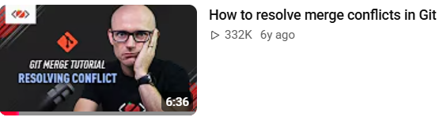
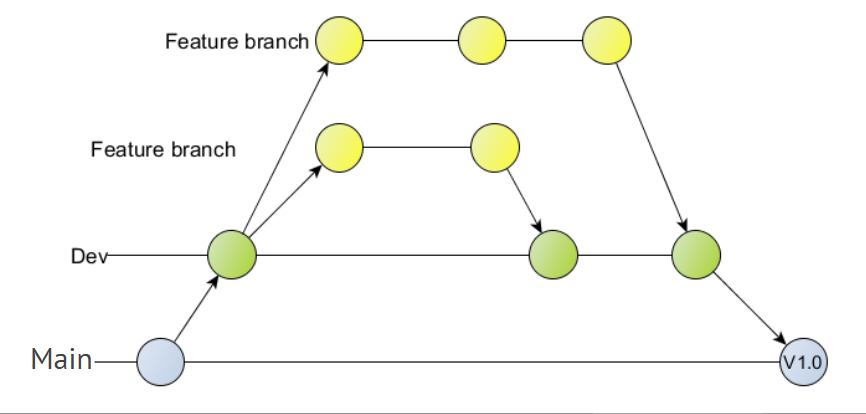
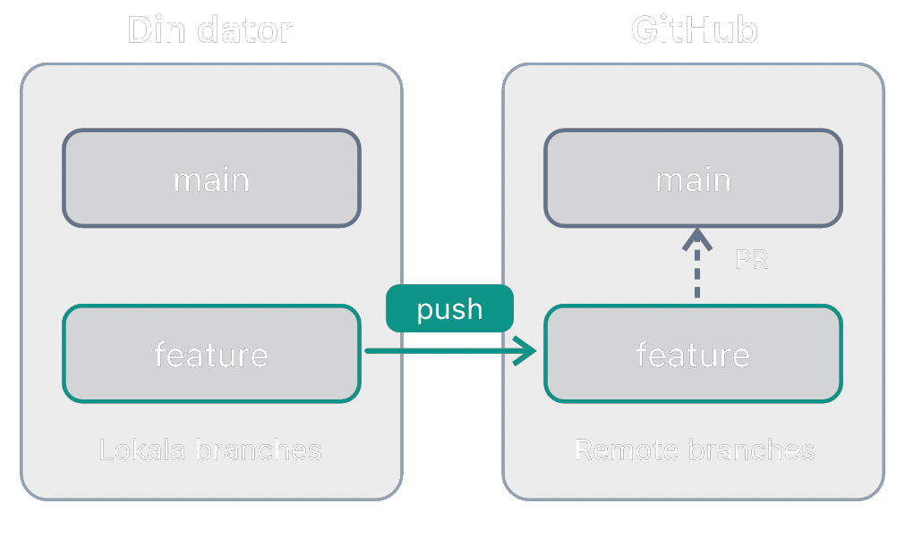

Git branches
Jobba på nya saker i ett eget spår – utan att förstöra det som redan fungerar.
Problemet
Programmet fungerar. Nu ska du bygga en meny – och mitt i allt kraschar det.
- Du vill kunna testa nya idéer utan risk.
- Du vill kunna jobba på två saker samtidigt.
- I en grupp vill alla koda samtidigt utan att krocka.
Lösningen: branches (grenar).
Vad är en branch?
En branch är ett eget spår av commits. main är huvudspåret.
gitGraph commit id: "Skapa projekt" commit id: "Product" branch meny checkout meny commit id: "Meny steg 1" commit id: "Meny steg 2" checkout main commit id: "Rätta stavfel"
Commits på meny påverkar inte main – förrän du väljer att slå ihop dem.
En branch är bara en etikett
Tekniskt är en branch en pekare till en commit. När du committar flyttar pekaren fram.
HEAD visar vilken branch du står på just nu.
git log --oneline --graph --all
* c4e1a90 (HEAD -> meny) Meny steg 2
* 9b2f7d3 Meny steg 1
| * 51aa0e6 (main) Rätta stavfel
|/
* 2d8c3f1 ProductAtt skapa en branch är gratis och går blixtsnabbt – Git kopierar inga filer.
Se och skapa branches
git branch # lista – * visar var du står
main
* meny
git branch meny # skapa (men stanna kvar)
git switch meny # byt till meny
git switch -c meny # skapa OCH byt – samma som de två ovanÄldre kommando som gör samma sak: git checkout meny och git checkout -b meny
git checkout eller git switch?
git checkout är det gamla kommandot. Det gör två olika saker: byter branch och återställer filer. Därför delades det upp i två nya kommandon 2019 (Git 2.23):
| Vad du vill göra | Gammalt | Nytt |
|---|---|---|
| Byta branch | git checkout meny | git switch meny |
| Skapa och byta | git checkout -b meny | git switch -c meny |
| Ångra ändringar i en fil | git checkout -- Program.cs | git restore Program.cs |
Båda fungerar. Använd git switch – namnet säger vad det gör, och du kan inte råka slänga ändringar i en fil. git checkout kommer du att se i äldre guider och på Stack Overflow.
Byt branch = byt filer
När du byter branch byter Git ut filerna i arbetsmappen så att de matchar den branchen.
git switch meny # Program.cs har menyn
git switch main # menyn är "borta" – den finns bara på menyCommita innan du byter branch. Har du osparade ändringar som krockar stoppar Git dig.
Merge – slå ihop
Stå på den branch som ska ta emot ändringarna, och merga in den andra.
git switch main # 1. gå till mottagaren
git merge meny # 2. hämta in meny
git branch -d meny # 3. städa bort branchengitGraph commit id: "Skapa projekt" branch meny checkout meny commit id: "Meny steg 1" commit id: "Meny steg 2" checkout main commit id: "Rätta stavfel" merge meny id: "Merge meny"
Två sorters merge
Fast-forward
Inget nytt har hänt på main. Git flyttar bara fram pekaren.
gitGraph
commit id: "A"
commit id: "B"
commit id: "C (meny)"
Merge-commit
Båda har nya commits. Git gör en ny commit som knyter ihop dem.
gitGraph
commit id: "A"
branch meny
commit id: "B"
checkout main
commit id: "X"
merge meny id: "M"
Merge-konflikt
Båda branches har ändrat samma rad. Git kan inte välja åt dig:
git merge meny
CONFLICT (content): Merge conflict in Program.cs<<<<<<< HEAD
Console.WriteLine("Välkommen!");
=======
Console.WriteLine("Välkommen till Kaffekoppen!");
>>>>>>> menyLäs konflikten
Git skriver in båda versionerna i filen och märker ut dem:
<<<<<<< HEADStart på konfliktenConsole.WriteLine("Välkommen!");Din version – branchen du står på (main)=======SkiljelinjeConsole.WriteLine("Välkommen till Kaffekoppen!");Den andra versionen – från meny>>>>>>> menySlut på konfliktenDu bestämmer vad som ska stå kvar. Tre vanliga val:
Behåll din
Console.WriteLine("Välkommen!");Behåll den andra
Console.WriteLine("Välkommen till Kaffekoppen!");Behåll båda
Console.WriteLine("Välkommen!");
Console.WriteLine("Välkommen till Kaffekoppen!");De grå raderna – <<<<<<<, ======= och >>>>>>> – ska alltid bort. Annars bygger inte programmet.
Lös konflikten
- Öppna filen.
HEAD= din branch, nederst = den andra. - Skriv det som ska stå kvar. Ta bort
<<<<<<<,=======,>>>>>>>. - Bygg och testa.
git add Program.cs
git commit -m "Slå ihop meny"Konflikter är normala – inte ett fel. Små, täta merges ger små konflikter.
Ångra dig: git merge --abort
Blev det en konflikt du inte vill lösa just nu? Du kan alltid backa.
git merge --abort # ångra – tillbaka till innan mergegit mergeallt fungerargit merge --aborttillbaka till start- Filerna blir exakt som de var innan du skrev
git merge. - Inget försvinner – branchen
menyoch alla dess commits finns kvar. - Du kan försöka merga igen senare, när du är redo.
Fungerar medan mergen pågår – alltså innan du har gjort git commit. Osäker? Kör git status: står det "You have unmerged paths" pågår en merge.
Video: lös merge-konflikter

Branches på GitHub
git push -u origin meny # första gången: skicka upp branchen
git push # sedan räcker det
git fetch # hämta info om andras branches
git branch -a # visa även remote-branches
main
* meny
remotes/origin/main
remotes/origin/meny
git switch kompis-branch # hämtar och byter till en kompis branchBranchstrategier
En branchstrategi är en överenskommelse i gruppen: vilka branches har vi, och hur kommer koden in i main?
| Strategi | Kort | Passar för |
|---|---|---|
| Bara main | Alla committar direkt på main | Små egna projekt |
| Feature branches | main + en branch per uppgift | Grupparbeten – de flesta projekt |
| Git Flow | main + dev + feature branches | Större projekt med versioner |
Det finns inget rätt eller fel – det viktiga är att alla i gruppen gör likadant.
1. Bara main
gitGraph commit id: "Start" commit id: "Meny" commit id: "Kvitto" commit id: "Rätta bugg"
- ➕ Enklast möjliga – inga branches att hålla reda på.
- ➖ Allt du committar hamnar direkt i den "riktiga" koden.
- ➖ Svårt när flera jobbar samtidigt – många konflikter.
Bra när du jobbar ensam med något litet, till exempel en övning.
2. Feature branches
Kallas också GitHub Flow. main fungerar alltid – allt nytt görs på en egen branch.
gitGraph commit id: "Start" branch feature-meny commit id: "Meny" checkout main merge feature-meny branch feature-kvitto commit id: "Kvitto" checkout main merge feature-kvitto
- En branch per uppgift → Pull Request → merge in i
main. - ➕ Enkel att förstå, och
mainär alltid hel.
Den här använder vi i grupparbeten.
3. Git Flow
Tre sorters branches: main, dev och feature branches.
feature-…mergas in idev.devmergas in imainnär en ny version är klar, till exempel V1.0.maininnehåller bara släppta versioner.
- ➕ Ordning och reda när man släpper versioner.
- ➖ Fler branches och fler merges att hålla reda på.
Vanligt i större projekt och på företag – bra att känna igen.
Vilken ska vi välja?
Börja enkelt. Behöver ni mer ordning senare kan ni alltid lägga till en dev-branch.
Feature branch workflow
Varje ny funktion får en egen branch. main fungerar alltid.
gitGraph commit id: "Start" branch dev checkout dev commit id: "Setup" branch feature-meny checkout feature-meny commit id: "Meny" checkout dev branch feature-kvitto checkout feature-kvitto commit id: "Kvitto" checkout dev merge feature-meny merge feature-kvitto checkout main merge dev id: "Release"
Main, dev och feature branches

- Main – bara färdiga versioner, till exempel V1.0.
- Dev – här samlas allt som är klart men inte släppt än.
- Feature branch – en per uppgift. Mergas in i
devnär den är klar.
Flödet steg för steg
git switch main
git pull # 1. börja från senaste versionen
git switch -c feature-meny # 2. ny branch för uppgiften
# ... koda, add, commit – ofta ...
git push -u origin feature-meny # 3. skicka upp branchen
# 4. skapa en Pull Request på GitHub
# 5. någon granskar → Merge
git switch main
git pull # 6. hämta den mergade koden
git branch -d feature-meny # 7. städaFrån din dator till main på GitHub

- Push – din lokala
featureskickas upp:git push -u origin feature - Pull Request – på GitHub ber du om att få merga
featurein imain - När PR:en är godkänd mergas den på GitHub – inte på din dator
Pull Request
En Pull Request (PR) är en fråga på GitHub: "Får jag merga min branch in i main?"
- Gruppen ser exakt vilka rader som ändrats.
- Man kan kommentera och be om ändringar.
- När alla är nöjda: klicka Merge pull request.
På GitHub: Pull requests → New pull request → välj din branch → Create pull request.
Bra branch-namn
| Dåligt | Bra |
|---|---|
test | feature-meny |
ludvig2 | fix-studentrabatt |
nya grejer | feature-kvitto |
Kort, utan mellanslag och å/ä/ö. Säg vad branchen gör.
Branches i Visual Studio
| Kommando | I Visual Studio |
|---|---|
git branch | Branch-namnet längst ner till höger |
git switch -c | Branch-namnet → New Branch |
git switch | Klicka på en annan branch i listan |
git merge | Git → Manage Branches → högerklicka → Merge into … |
git log --graph | Git → View Branch History |
Sammanfattning
| Kommando | Gör |
|---|---|
git branch | Lista branches |
git switch -c namn | Skapa och byt till ny branch |
git switch namn | Byt branch |
git merge namn | Hämta in en branch i den du står på |
git merge --abort | Avbryt en merge |
git branch -d namn | Ta bort en branch |
git push -u origin namn | Skicka upp branchen till GitHub |
git log --oneline --graph --all | Visa alla branches som ett träd |
Nu: Git-sidan – gör övning 4 och 5 om branches och konflikter.
Piltangenterna byter bild ·